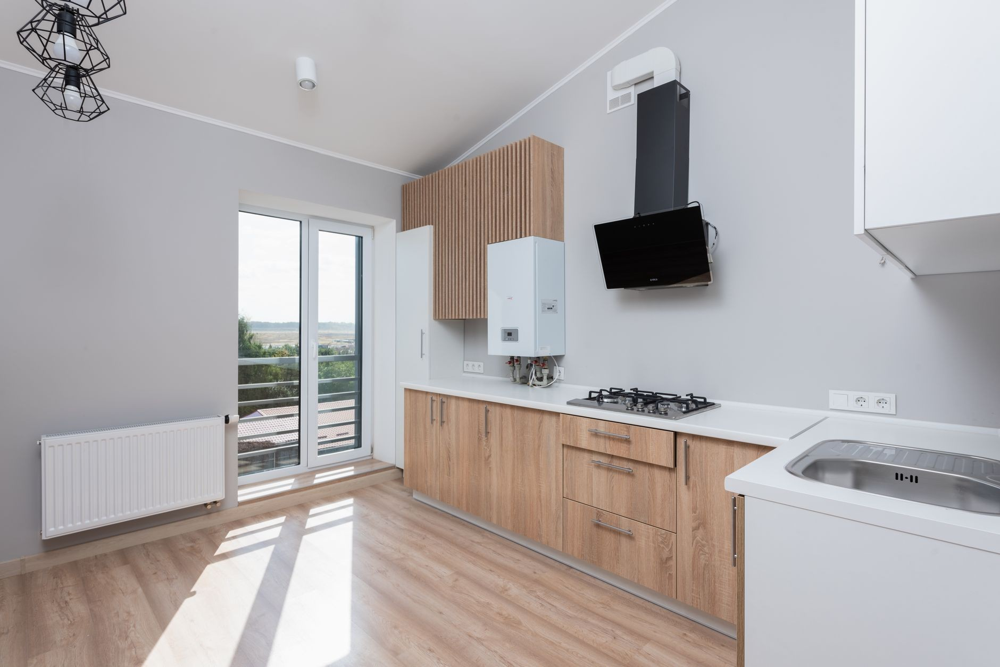
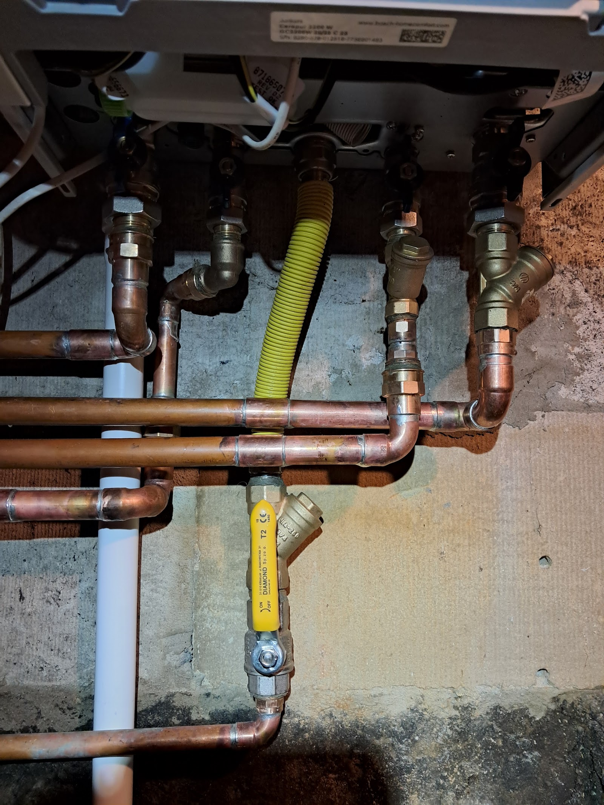
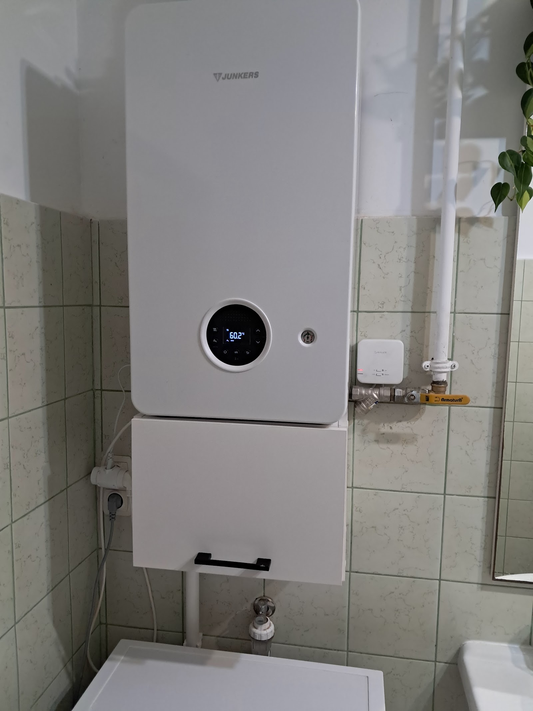
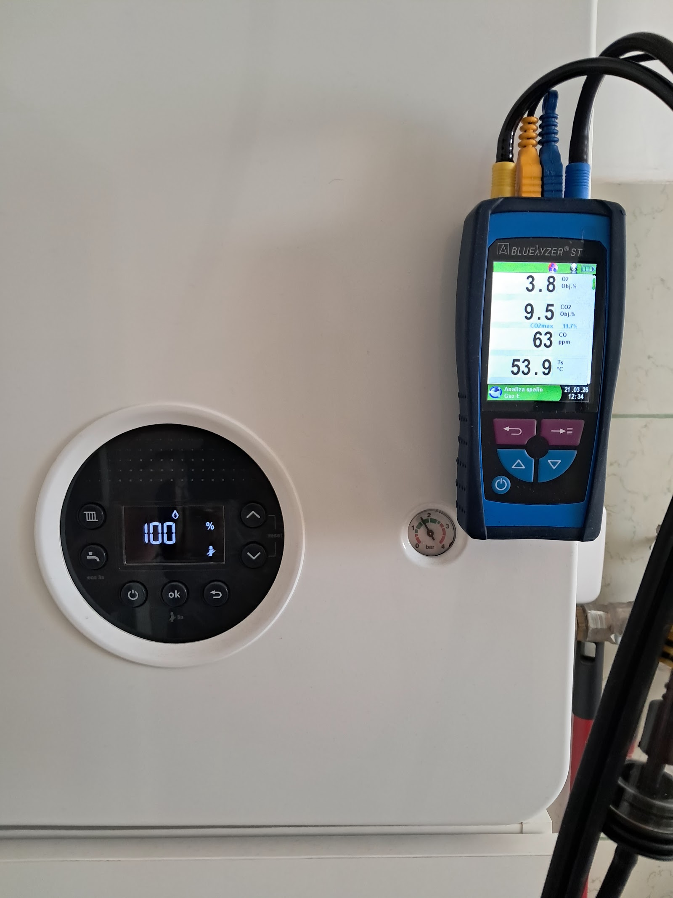
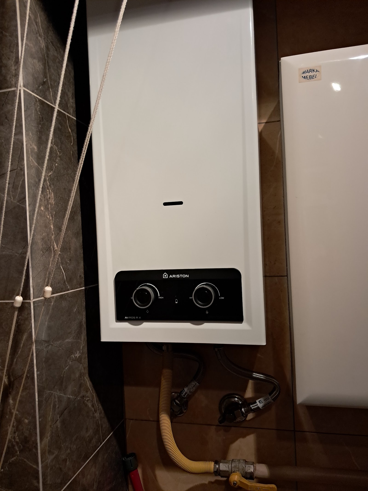
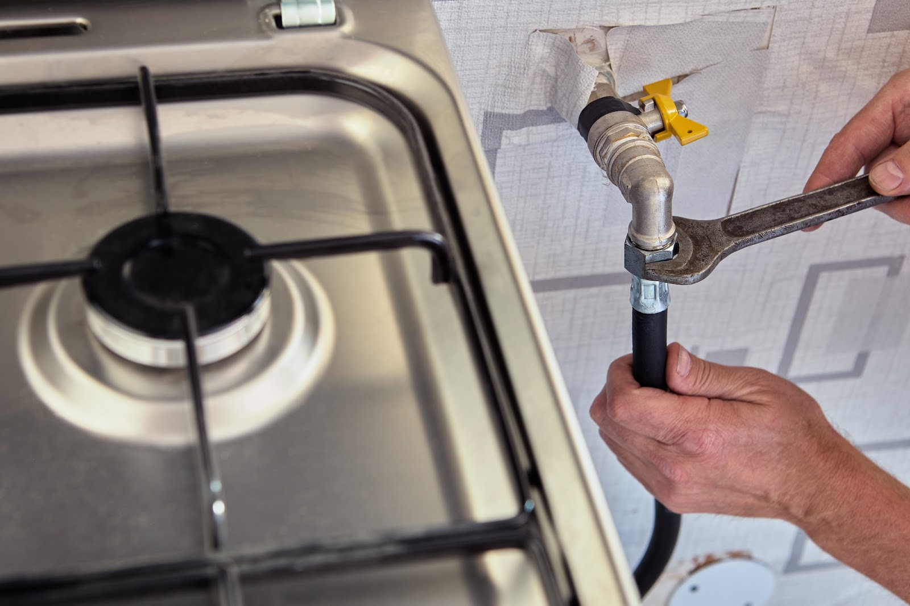

Od zatkanego odpływu po całą kotłownię. Ty mówisz, co się dzieje - ja mówię, ile i kiedy.
Sprawdź termin +48 725 198 622Prosty, przewidywalny proces. Bez niespodzianek i bez naciągania.
Opisujesz, co się dzieje. Od razu mówię, czy to pilne, czy może poczekać - i czy to w ogóle robota dla mnie.
Zanim wyjmę narzędzia, wiesz, ile zapłacisz. Jak w trakcie wyjdzie coś nowego, najpierw rozmawiamy - potem robię.
Robię swoje i nie znikam w połowie na inną budowę. Zaczęte kończę.
Na wykonaną robotę dostajesz gwarancję i jasny rachunek - jak coś nie gra, wracam i poprawiam.
Zakres prac, jaki robię najczęściej - pełny opis i wycenę znajdziesz niżej.
Zdjęcia z moich robót, nie z katalogu producenta. Tak wygląda skończona robota.





Bardzo polecam, Pan po telefonie i opisaniu sytuacji, przyjechał w późnych godzinach wieczornych. Usterka hydrauliczna wykonana, co więcej ocenił stan innych części i pozbył się zbędnych, a kolejno przerobił.Dominika Kołodziej
Fachowiec starej szkoły. Wszystko umyte, wyczyszczone, serwis pierwsza klasa. Dojazd w sobotę, gdzie ciężko kogoś znaleźć, a tu bez wahania i od ręki. Bardzo polecam usługi Pana Krzysztofa.Andrzej Kaszuba
Bardzo polecam. Fachowa i rzetelna usługa, szybka pomoc mimo weekendu i pełen profesjonalizm. Usterka została sprawnie usunięta, a wszystko dokładnie wyjaśnione w prosty i zrozumiały sposób.Marcin Matera
Nie wiesz, czy dojadę do Ciebie? Zadzwoń i zapytaj. Jak nie dojeżdżam, powiem od razu i nie zajmę Ci dnia.
Zależy, co się dzieje - dlatego wypytuję przez telefon i od razu podaję widełki. Ostateczną cenę znasz przed robotą, nie po niej.
Nie. Przyjazd i wycena w Mielcu i najbliższej okolicy są bezpłatne i do niczego nie zobowiązują.
Przy zalaniu liczy się każda godzina, więc przy awarii przestawiam grafik. Prace planowane umawiamy z kilkudniowym wyprzedzeniem.
Tak - VAT albo paragon, jak wolisz. Z firmami i wspólnotami rozliczam się przelewem.
Robię głównie Mielec i okolice. Masz wątpliwość - zadzwoń, to kwestia jednego pytania.
Wracam i sprawdzam. Moja wina - poprawiam za darmo; wyszło coś nowego - mówię wprost, co i za ile.
Napisz albo złap mnie telefonicznie - przyjadę, obejrzę i podam jasną cenę. Bez zobowiązań.